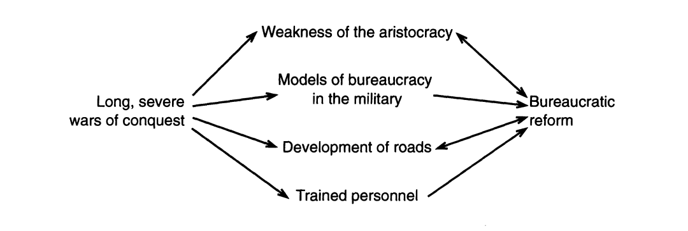
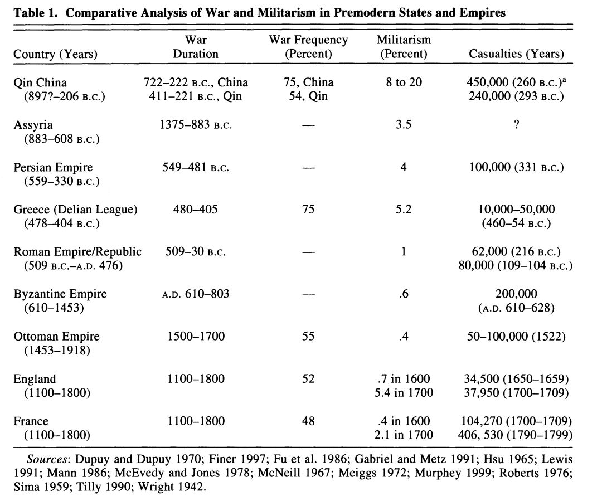
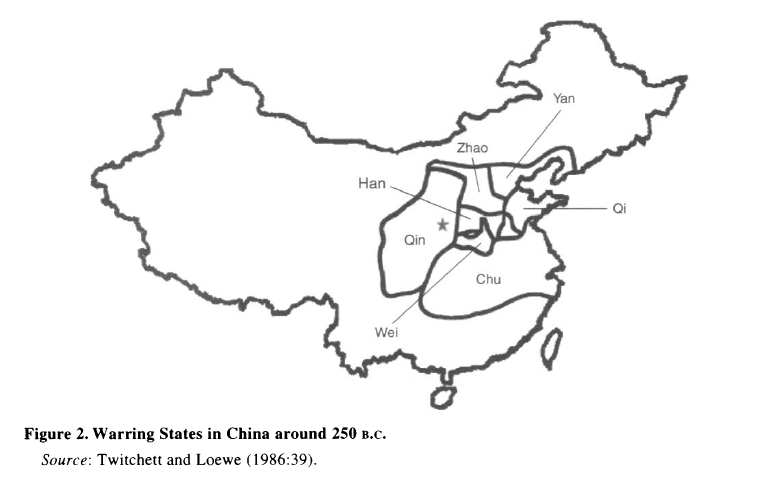
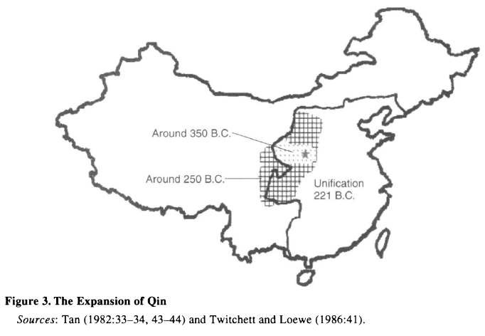
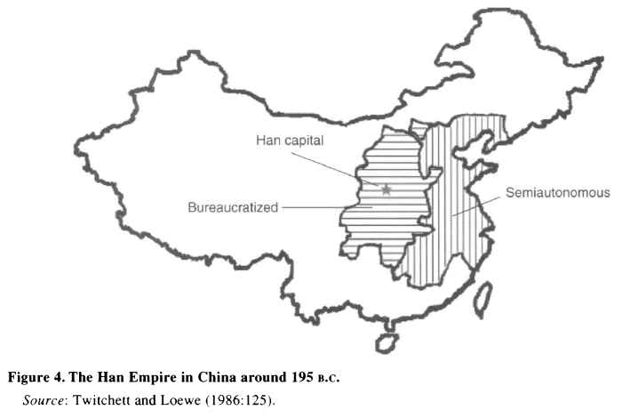
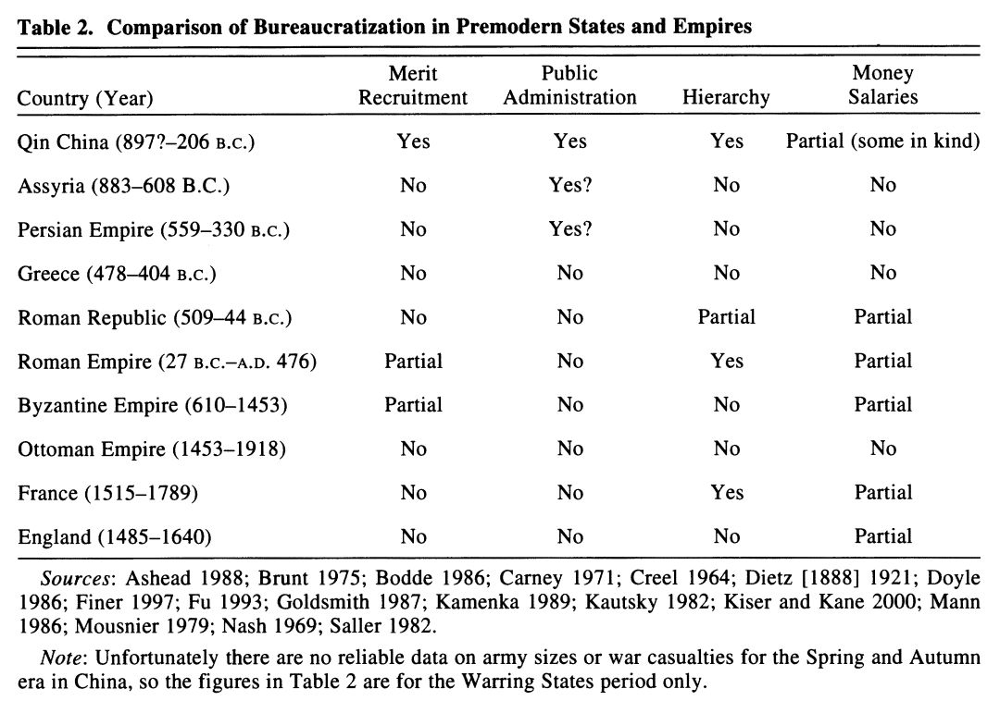

收录于合集
#历史政治学 58 个
#国家建构与国家发展 70 个
文献来源：Edgar Kiser and Yong Cai, “War and Bureaucratization in Qin China: Exploring an Anomalous Case,” American Sociological Review , Vol. 68, No. 4 (Aug., 2003), pp. 511-539.
作者简介：Edgar Kiser, 华盛顿大学社会学系荣休教授，纽约大学阿布扎比分校访问教授；Yong Cai（蔡泳），现任北卡罗来纳大学教堂山分校社会学系副教授。
一、导言
直到18世纪和19世纪，大多数国家内部才出现了中央集权化的官僚行政体系，但中国却是个例外。为什么秦领先欧洲国家2000年建立了部分官僚化的行政管理体系？在这篇文章里，凯瑟和蔡泳通过比较历史的方法，融合了代理人理论来分析“战争制造国家”。
秦是中国官僚制建设漫长历史中的里程碑，它不仅是早熟的官僚制中至关重要的代表，更形塑了中国政治历史长期发展的轨迹。早在战国时代（481- 221 B.C.），秦国（897？-222 B.C.）便不断发展巩固行政管理体系，最终统一中国，建立了秦朝（221 -206 B.C.）。本文试图解释以下三个问题：（1）秦国与秦朝官僚化的原因；（2）为什么短命的秦朝建立起来的部分官僚制延续的时间要比秦朝本身长得多；（3）为什么那时候的官僚制只能算得上是部分官僚制。对此，本文的第一个论点来自于比较历史社会学，在特定条件之下，军事竞争和战争驱动国家采取更有效的官僚制改革。第二个论点来自于韦伯，包括通讯、交通与文书保管在内的技术进步提高了国家的监管能力，成为发展官僚制的必要条件。最后，本文将秦与亚述帝国（883-608 B.C.）、波斯（559-330 B.C.）、提洛同盟（478- 404 B.C.）、罗马共和国（509-44 B.C.）、罗马帝国（27 B.C.- A.D.476）、拜占庭帝国（公元610年-公元1204/1453年）、奥斯曼帝国（公元1453-公元1918）、早期现代英格兰（1485-1640）以及法国（1515-1789）进行了比较。
二、 官僚制的结构与组织的决定因素：
建立融合理论模型
历史社会学家关注社会结构而忽视了微观层面的意义，他们指出战争是国家规模和形式的主要结构变量，但是学者对战争是否促进国家或者阻止国家生成各执一词。韦伯（[1921/1922] 1978）指出，相比孤立的国家，卷入军事竞争的国家更可能发生官僚化。Ertman(1997)对韦伯的观点做了修正并引入了战争的时间，他指出1450年前的战争导致了欧洲的封建化，并且早期频繁的战争导致后来的国家更加难以进行官僚化改革：（1）对人员的训练渠道有限，统治者对贵族的依赖允许贵族对管理职位占有；（2）既存组织模式都是非官僚制（比如封建主义和天主教会）。Ertman的解释有助于回答为什么早期欧洲没有发展出官僚制，但对中国意味着什么？事实上，尽管早期经历了高频度的战争，中国仍然建立起了相当官僚化的国家，因此Ertman的理论并不适用于中国。为此，我们必须回眸当时中国（春秋战国时代）的结构性条件，对人员的训练和官僚制的模式在当时可得等问题进行分析。
其次，本文使用的代理人理论也源自于对韦伯理论的发展。这一理论认为，统治者通常在保持权力的范围内寻求更有效率的管理体制，但是在不同的结构性条件（代理人职位、监管方式、制裁类型以及它们的组合）下，统治者会选择不同类型的体制。如果某一势力的财富和权力相对于统治者越独立，他们就越难被控制，因而也就越能阻挡提高效率但是降低自身收益的改革，这也就是为什么许多前现代社会的统治者试图（但通常不成功）来阻止土地贵族垄断行政管理的职位。换言之，官僚化需要排除贵族的干扰，从而建立以贤能为基础的体系。
三、 中国的官僚制
将代理人理论和比较历史中关于战争影响的观点结合起来有助于解释为什么中国的官僚化进程发生的如此之早？图1的因果模型揭示了长期且剧烈的战争对选拔官僚和监管能力的影响。

图1 中国官僚制发展的因果模型
官僚制的起源
首先，官僚制的建立有赖于贵族权力的削弱。特定类型的战争通过减员（在前现代社会中，军队几乎都由贵族领导，贵族在作战中阵亡）以及削弱他们合作抱团、集体行动的能力进而削弱了整个贵族阶级。其次，官僚制模式的可能性也是因果机制的另一重重要原因。因为我们并不能推断行动者掌握的信息，所以知道行动者知道多少就很重要了——他们的选择受限于对既有信息的掌握，正如Ertman(1997)指出，在1450年之前，中世纪的欧洲国家未能实现官僚化是因为他们不知道官僚制的结构——他们得不到关于官僚制模式的信息。
中国历史上早期的战争带来的第二大重要产物是军队组织的部分科层化。在战国时代，原来军队中半封建的组织形式为更加科层化的军事组织所取代，这是铁制武器的发展以及从以战车和骑兵作战转向以平民为主的步兵作战的结果（K. Yang [1955] 1980; Bodde1986）。这些大规模的步兵需要更多的训练和组织，因此从某种意义上来说，他们至少是科层化的。相应的是，国家也需要掌握更多的信息来确保人民和资源处于控制之下。进一步，军队的科层化直接推动了文书保管的发展，这对官僚制而言是必须的。因此，同后来早期现代欧洲国家诞生的经验一样，中国战国时期的军队先于行政管理体制官僚化开始部分科层化——并且成为其中的一个模式（Downing 1992:70; on Prussia,see Gorski 1993）。战争不仅为人们证明他们的作战能力和领导权提供了展示机会，并且也训练士兵遵守纪律，因此军队的部分科层化还便利了官僚制下对官员的训练。此外，战争对控制技术也产生了直接影响，使得国家强化了监管能力。
官僚制的延续
秦朝的统治极为短暂，以至于未能超过20年。在秦朝崩溃后，官僚制又是如何延续下来的呢？韦伯（[1921/1922] 1978:223,987）指出了可能影响官僚制长期存在的机制。在他看来，官僚制因为自身的技术领先与灵活性——能被不同类型的统治者运用从而“几乎无坚不摧”，但是这一解释离成为阐释官僚制存续的机制还不够。韦伯自身也并不想从功能主义的立场进行说明，他继续指出“坚实的物质和理想的利益”支持了官僚制，包括官僚本身以及公民对社会秩序的期许。韦伯关于官僚制存续的观点是路径依赖的早期版本（Mahoney 2000; Pierson 2000）——他认为官僚制一旦建立便会进一步自我强化。本文进一步发展了“官僚制具备自我强化属性”的论点，其理由在于官僚制一方面削弱了独立的贵族群体势力，一方面发展了通讯、交通和文书记录在内的技术。为什么在主要战争结束后，贵族势力继续式微了呢？本文认为这是早期官僚制发展的结果而非原因。相比独立的贵族，统治者更偏好依附自身的国家精英，因为他们更容易被控制。因此，建立官僚制是统治者在与贵族拉锯中增加权力的策略。不仅如此，一旦统治者建立了官僚行政管理体制，他们就会得到新的国家精英这一强大盟友去帮助他们维持官僚制。另一个决定官僚制存续的重要原因——包括通讯、交通和文书保管技术在内的发展也有部分内生性。因为一旦官僚制被采用，统治者也就有强大的动机去提升他们的监管能力。
官僚制的局限性
尽管本文强调了秦的官僚制的重要性，但必须指出，秦朝的中国官僚制远未达到完全的官僚化，机构理论可以解释其局限性。因为随着国家地理面积和官员规模的增加，官僚制行政管理的困难将大大增加。另一方面，官僚制的效率取决于监管技术的充分发展，当监管能力不足时，统治者将偏向官僚制中的某些特定类型。终秦一朝，国家的监管能力仰赖的技术（通讯、交通和文书保管）并未充分发展，皇帝始终面临维持监管的困难。
四、中国国家官僚制的起源
春秋战国时代的影响
去中央集权化的、半封建的周朝在后期因国力式微走向崩解，并在接下来的550年中分裂为数百个国家相互攻伐（Hsu 1999:568-69），由此促进了官僚制的形成。为什么其他前现代帝国和国家同样经历了频繁的战争却并未走向官僚化，这一原因部分取决于战争的性质和范围，也部分在于战争发生情形的结构条件。
战争削弱了贵族势力
根据许倬云（Hsu 1965:56-64）的统计，在公元前722年到公元前222年的5个世纪中，有75%的时间都在打仗。春秋时期只有38年的和平时间，战国时代则有89年的和平时间。尽管战国时期的战争频率有所降低，但是每一场战争持续的时间更长了。这种战争带来的影响是贵族势力的锐减，因为近乎每一场战争都导致了国家内社会阶级的重组。许倬云（Hsu 1965:39）通过比较发现，春秋时代，每个国家内部大约有26%的官员并非贵族出身，而这一比例在战国时代则达到了55%。
作为官僚制模型的军队
随着贵族对军队控制的衰落，贵族式、半封建的、以战车和骑兵为主进行作战的军队转向以平民为基础的步兵作战，为了管理数量庞大的军队，强调驭下的法家思想应运而生，这就表明文化影响官僚化的另一重路径。战国时代半官僚化的军队对个人的训练和纪律性都提出了要求。从此，军功取代出身，并且大多数文官也出生于军队（Zuo 1986:124）。
通讯技术的发展
贵族制的削弱为早期中国的统治者在较少受到反对的情况下推动官僚化改革提供了契机，但是这并不能解释这些改革为什么推动了效率的提升。本文指出，战国时代通讯技术的发展为官僚制提升监管能力提供了契机。春秋战国时代长期大范围的战争推动了道路和通讯系统的发展（Hsu 1999:580-81），比如春秋时代，以战车为主的作战要求修建更多更好的道路，这样中国的主要城市就被修建的道路连接了起来，同时各国还在修建运河，而从西周就开始建设的邮政系统在进入战国后进一步发展，能用于车马休整（Lu 1941:373）。
五、 比较：其他前现代帝国和国家中的战争
既然前现代国家都无比好战，那么为什么中国的经验如此特殊？表1比较了每个帝国和国家战争的频度和惨烈程度（死亡人数），不难发现尽管战争造成的影响有一些相似性，但中国早期历史上的战争比世界其他国家任何一个地方都频繁，都密集，并且持续的时间更长。直到17世纪，欧洲的战争频度才赶得上早期中国。正因为在中国之外的其他帝国和国家中战争频度较低，所以贵族势力并未受到明显削弱。不仅如此，贵族还能维持对大多数管理职位的控制。当然，雅典和罗马的军队都进行了部分科层化改革。此外，中国和罗马的道路修建格外引人注目。因此，尽管官僚制雏形的出现并且道路的修建降低了联系的难度，但是只有当贵族的权力被削弱后，官僚制改革才得以进行。

战国时代的行政改革
中国官僚制建设的进程始于战国，战争将这些国家连接起来，知识分子频繁的往来也推动了国家之间彼此的联系。如图2所示，在战国时代，各国互相盯着彼此、密切注视着其他国家的改革效应并争相模仿。魏国（445 B.C.）、赵国（403 B.C.）、楚国（390 B.C.）、齐国（357 B.C.）、韩国（355 B.C.）等国先后进行了变法革新，其中商鞅在秦国的变法最为引人注目。尽管这些变法措施有诸多区别，我们也难以穷尽其中的细节，但是总体上这些变法的目的很相似，都旨在削弱贵族的权力。长此以往，基于功绩的科层体系创立起来并取代了周朝的贵族体系。这其中，秦国虽非第一个开始变法，但却是最长久的。秦国的官僚制改革一直贯穿到秦朝统一以及随后的西汉，并催动了更少依赖社会经济基础的新阶层——士族的出现（Lewis 1999:604; Hsu 1965:39）。

秦对中国的统一
公元前221年，秦统一六国结束战国时代，官僚制得到了进一步发展，中国官僚化进程中进入重要的第二阶段。Creel(1964)将这一制度描述为“世界其他地方不曾出现的、更为统一和高效的中央集权制国家”。秦朝的行政管理建立在科层制基础之上，朝廷将全国划分为36郡，每个郡又划分为一定数量的县，各郡的行政、军政和监察长官都由中央任命，并受到中央的监管，这些举措抑制了贵族家产制的复辟。此外，秦朝通过大力修建公共道路和运河将不需要再在军中服役的人们组织起来。此外，如图3所示，秦朝中国的疆域比当代中国要小得多。公元前350年，刚开始进行官僚化改革的秦国大约只有50000平方公里大小，在公元221年前统一六国的疆域也只有900000平方公里，这与亚述、波斯和罗马等其他帝国相比要小得多（比如罗马帝国后来统治的疆域是秦国的34倍）。因此，土地面积上的差异也有助于理解为什么秦可以较早的开启官僚化进程。

官僚制的延续：汉代的巩固
公元前206年，秦朝在声势浩大的农民起义中覆亡，短暂统一的中国似乎又回到了纷争的战国时代。刘邦在楚汉争雄中胜出，随后诞生的西汉虽然延续了自战国到秦的官僚制（Bielenstein 1980:4-113; Creel1970:4; J. Roberts 1976:269; Watson 1999:207- 208），但并非在立国伊始就完全才用，因为秦的“亡也忽焉”让当时的人们质疑中央集权化的官僚制政府本身的有效性和合法性（Loewe 1986a:111）。因此，刘邦将秦朝的官僚制和周朝的封建制结合起来（如图四所示）。起先，西汉只建立了15个由中央政府直接控制的郡，这些郡一共才占据了全国1/3的领土，剩下的2/3领土则由半自治的王国进行统治。在异姓王被消灭后，刘邦将这些王国的土地分封给具有相同血缘的兄弟和子孙，实行同姓王统治，但是相同的血缘并不能保证长治久安，随着朝廷与封国之间的冲突不断加剧，公元前154年，西汉爆发了七国之乱。汉廷随即对叛乱的王国进行了镇压，并在获胜之后扩大了官僚制控制的范围：到公元前143年，中央政府设立的郡达到40个，而半自治的王国数量则降为25个，最后汉廷在这些王国的领地上建立了官僚制政府，由中央政府对其进行直接管辖。

自秦国始，半官僚制下的郡县官员都由中央政府任命（Bielenstein 1980:4-113），这些官员有固定的俸禄，但多以谷物形式进行发放，这与现代官僚制下的薪水仍有明显不同，因此只能算得上是半官僚化的。同时，这一时期的专业化没有得到太多发展，地方官员们要统管包括税收、户籍、土地、治安和狱讼在内的各种事务。尽管如此，这一时期的官僚制在选官任官的程序上取得了重要发展，并在后来形成了正式的选举制度。有秦一代至西汉初年，大多数政府官员都出身行伍，以军功任职。这种任官制度在帝国面临持续的战争压力之时十分有效，但是在外患平息的承平时代就显得格格不入了。因此，皇帝要求百官向朝廷举荐人才并加以考核（如果候选人未能通过考试，举荐的官员会被惩处，这有助于减少裙带关系和恩庇主义的影响），汉武帝时在长安始建太学来培养官员（Zuo 1986:124）。当然，国家的监管也变得更加官僚化。随着国家统治疆域的扩大，皇帝直接监管的成本增大，于是对中央和地方官员进行监管的监察机构被创设出来（Bielenstein 1980:91;Zhang1992:152-53），比如刺史负责监察地方并直接向中央政府汇报（Qiu 1992:88）。
秦汉官僚制的局限性
尽管如此，早期中国的官僚制离理想的官僚制还相距甚远，主要表现在以下几点：（1）朝廷运用严刑峻法进行统治，比如秦的严刑峻法最终激起了农民起义导致自身覆亡；（2）只有最高层级的政府才是官僚化的，在县以下的乡、亭、关中，这些层级的行政管理人员（胥吏）并不列入政府官员目录。此外，基层权力仍然掌握在地主士绅手里；（3）随着疆域的扩大和监管困难的增加，朝廷一开始只能在临近京畿的地区建立官僚制政府，比如图4所示汉初“郡国并行”的局面；（4）朝廷有意通过给予官员重叠的职责和岗位来防止坐大，但由此导致了冗官问题的产生。比如秦汉经常任命数个人在同一职位任职，以相互牵制，常见的有左右丞相等。
六、 秦与其他前现代帝国的比较
秦代中国比其他前现代帝国和国家更为官僚化吗？对此，本文按照韦伯理想化的官僚模型分别从官员选拔、公共管理、科层以及薪水四个维度建立了表格进行比较，发现秦朝的中国确实比其他前现代帝国和早期欧洲国家都更加官僚化。

七、总结
从秦国到秦朝再到西汉的早期中国历史揭示了战争在制造国家方面发挥的重要作用（Downing 1992; Ertman 1997;Kiser and Linton 2001; Tilly 1985; 1990）。本文将比较历史观点和代理人理论综合起来，对“战争制造国家”的理论进行了进一步细化。但是秦是长期高频残酷战争的唯一产物吗？事实上并非如此，早期现代英格兰国家的形成也符合这一理论。秦与英格兰的案例都是国家之间竞争与地理位置偏远等要素综合的产物。此外，未来的研究要更加关注文化的影响，Gorski（1993）指出新教推动的纪律革命推动了北欧和西欧（包括英格兰）的官僚化进程，那我们能否据此推导法家思想对战国国家的官僚制改革起到了同样的促进作用？对这些问题的回答都有待学界的进一步探索。
编注：早期的官僚制与世袭贵族纠缠不清，西周、春秋时代的受爵者对君主承担义务，但其“禄”却并非固定收入，很多属于自己已经拥有并又君主确认的传统权力，任职的报酬只是一部分；但与此同时，正如阎步克所说，周代的品位安排里还包括一个领取“稍食”的阶层，不同于公卿大夫，就是胥吏（即庶人在官者，例如左传中出现的舆、僚、牧等）。该阶层以口粮为报酬，以考课定等，按月发放收入，已经蕴含了官僚制萌芽，而按月获得报酬的官僚制也正有此来源。后世禄秩以石为品级，也根源在此。所以官僚制并非如本文所说只是战争缔造的产物，而在更早的时代已有萌芽。
第二，从发展来说，战争对于官僚制的缔造产生了重要作用，随着战国以来各国变法的推进，具体体现在以秦国二十等爵为代表的爵制上，正如日本学者守屋美都雄研究发现，二十等爵与军职间有着对应关系，进一步研究也表明，军功爵与军职一直在战国藕断丝连，这种早期官僚制雏形的官爵合一制度确实源自军功，成为后来绵延不绝的官僚制源头，有台湾学者甚至称军爵塑造了新社会。
第三，源于周代吏的定酬定等从品位下端延伸到上端，成为后来官僚制的源泉，正如阎步克所说，蕴含了政治转型与统治者换血的进程，官僚制上升并逐渐取代贵族制，原来被人轻贱的吏一跃而起，成为国家运行中不可分割的一部分。而贵族制也顽强的延滞下来，百姓和官吏依然重视爵，而秦汉帝国的三公尽管已经都是战国以来的新兴官职，但公、上卿的定位仍是对周爵的比附。
第四，文中关于春秋战国时代的军事组织的表述似有误，骑兵出现较晚，而非早于步兵。根据考古学研究，公元前第一个千年中期，北方草原气候干冷化，骑马与游牧才开始出现，畜牧业在原本宜农的鄂尔多斯发展，并向晋陕高原北部扩展（李家崖文化），但直到西周晚期向春秋过度期间，骑马术才在北方游牧人群中普及，这些骑射精强的武士才开始南下与中原各国竞争。但此时中原各国并未采用骑射，仍然以战车为核心，步兵为组成部分进行作战。向北方草原人群学习骑射并组织骑兵，要到更晚的战国时期，最典型的代表就是赵武灵王胡服骑射。
编译：杨端程 编注：秦汉元 编辑：康张城
【政文观止Poliview】系头条号签约作者